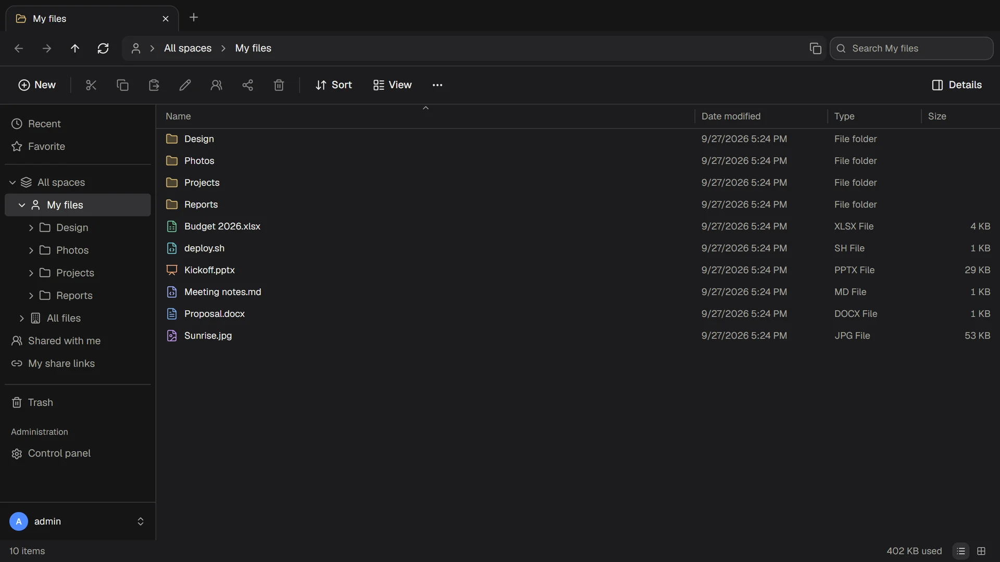

Your files, on your servers, as easy as File Explorer.
ThirtyFile is a file manager for your team that runs in the browser. It looks and works like the File Explorer everyone already knows, and your files stay on storage you control.


Everything a shared drive needs
No training required. If you can use File Explorer, you can use ThirtyFile.
Familiar from the first click
Tabs, an address bar, a folder tree, drag and drop, right-click menus and the keyboard shortcuts you already use. Or map it as a drive on a computer or phone.
Office files open in the browser
Preview Word, PowerPoint and Excel without installing anything. Edit Excel workbooks and text files online, with earlier versions kept.
Share with a link
Send a link with a password, an expiry date and a download limit. Share a folder with a colleague, or let people send files to you.
Storage you choose
A local disk or NAS, where your files stay ordinary folders, S3-compatible storage, SFTP or FTP. An existing folder, such as a NAS share, can become a space.
Spaces for every team
Personal, company-wide and team spaces, with roles for viewers, editors and managers, and a size limit for each.
Sign in your way
Passwords with two-step verification, or accounts from Microsoft, Google, GitHub or any OpenID Connect provider. Every sign-in and file action is logged.
Edit spreadsheets without leaving the browser
Open an Excel workbook, change what you need and save. The file stays a normal Excel file that opens anywhere.
- Formulas, number formats, colours and borders
- Copy and paste to and from Excel
- Charts, pictures and everything else in the file are left untouched

Share exactly as much as you mean to
A link can ask for a password, stop working after a week, or allow a set number of downloads.
- Links stop working when the person who made them loses access
- See who opened a link, and when
- Recipients need no account

Comfortable day and night, desk or phone
Light and dark mode, a layout for phones, and English or Traditional Chinese for each person.
- Thumbnails for photos and a viewer for video, audio and PDF
- Uploads continue where they stopped after a lost connection
- Your own name, logo and colours on every page

Running in one minute
One small program. No database or web server to set up.
- Install Dockeron the computer or server that will hold the files.
- Run the commandwith a password of your choice.
- Open the pageat
http://localhost:8080and sign in asadmin.
docker run -d --name thirtyfile --restart unless-stopped \
-p 8080:8080 \
-v /srv/thirtyfile/data:/data \
-v /srv/thirtyfile/storage:/storage \
-e THIRTYFILE_ADMIN_PASSWORD='choose-a-password' \
ghcr.io/thirtyfile/thirtyfile:latestcurl -fLO https://github.com/ThirtyFile/ThirtyFile/releases/latest/download/compose.yaml
docker compose up -dGive your team a drive of their own
Install it in a minute and see for yourself. The source code is on GitHub.